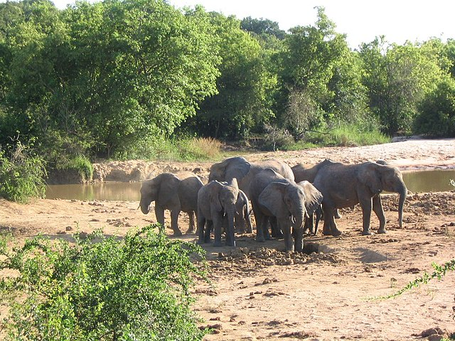

Biology
Conservation of Natural Resources
First Published: | Last Modified:
Learning Objectives
After completing this chapter, you will be able to
- understand the definition of conservation and natural resources
- define conservation;
- distinguish between renewable and non-renewable resources;
- state the reasons for conserving natural resources;
- methods of conserving natural resources;
- state the importance of natural resources;
- recognize the problems associated with conservation.
Mini Glossary
- conserve
- to protect something from being destroyed or used up
- natural resources
- They are materials that are not made or caused by humans and are use to support life e. g water, air.
Introduction
As we all know that everything in this life has its own period of existence, as a result we need to find a way to ensure their (natural resources) availability or existence and that's what bring us to the study of conservation of natural resources.
What did you understand by the word conserve?
Conserve simply means to save something for later use or to protect something. Conservation means wise use of something. Now let define it in relation to natural resources.
Conservation of Natural Resources can be defined as the process of saving or making judicious use of natural resources to ensure their continuous availability and to preserve their natural quality for future purposes.
Natural Resources

Iroko tree is a renewable resources because it is replenished by natural process.
Crude oil is an unrenewable resource.
Natural resources are materials from the earth that are used to support life and meet people's need. Example of natural resources are coal, copper, raw materials for production of goods, food, soil, water wildlife e.t.c.
Types of Natural Resources
There are renewable and non-renewable resources
Renewable Resources
This are resources that are replaced by the environment over relatively short periods of time. Examples of renewable resources are water, air, animal, plant, food, soil. All these can be replenished by natural processses, so there is no fear of being used up. For example, water can be replenished by rainfall.
Non-Renewable Resources
This resources that are not easily replaced by the environment. Petroleum, oil, coal and many mineral resources falls to this category.
Note Most non-renewable resources are formed from organic carbon which is heated and compressed over a long period of time.
Needs for Conservation
The following are the reasons for conserving natural resources:
- To create biodiversity;
- To keep them for future purposes;
- To preserve their natural qualities;
- To save water.
Methods of Conservation
Soil Conservation
Once the vegetation cover has been removed, the soil will be exposed to wind, rain and other elements which leads to the gradual washing away of the top soil (that is, erosion). This causes soil degradation; soil degradation is the fall in the soil quality. Soil degradation is also caused by bush burning, overgrazing, excessive use of fertilizers or manure and unsustainable farming practices.
Soil erosion is a typical example of soil degradation.
The following are ways to prevent soil degradation:
- Planting of trees because trees serves as windbreaks to prevent soil from being blown away by wind and also to prevent desertification;
- Good farming practices such as contour ploughing to reduce run off and loss of topsoil;
- Crop-rotation and planting of cover crops should be adopted so as to ensure availability of soil nutrients;
- Bushing burning should be discouraged as it causes inactivity of essential soil microbes and death of essential soil organism like earthworms, termites;
- Avoid indiscriminate felling of trees (deforestation);
- Avoid soil pollution by oil spillage, excessive inorganic fertilizer and other industrial wastes.
Forest Conservation
Forest provide environmental, social and economic benefits to us but, despite this, inborn forest around us are still under threat from logging, clearing for agricultural, construction and industrial purposes.
Bush burning (top) and deforestation (bottom) are the killers of our forest and its resources.
We need to appreciate the importance of forest and preserve it. Therefore, the method of conserving forest are as follow:
- Encouraging afforestation and planting of trees;
- Establishment of forest reserves;
- Discouraging deforestation;
- Law should be made against discriminate falling of forest trees;
- Appreciate its importance and enlightened others about the value of forest.
Water Conservation
One of the basic unit of life is water for there's no living organism that can survive in its absence. The methods of conserving this indispensable resources are:
- Prevention of water pollution
- Rational use of ground water such as water from well, borehole;
- Repair of burst pipe and leakage;
- Treatment and recycling of used water.
Wildlife Conservation

Elephants; an example of wildlife.
Elephants; an example of wildlife.
These are animals that live wild in an area without being introduced by humans.
The method of preserving wildlife are:
- Establishment of game reserve;
- Prohibition of discriminate killing or poaching of wild animals;
- Prohibition of deforestation and encouragement of afforestation;
- Preventing of water pollution to prevent the destruction of aquatic life;
- Appreciating their importance and creating awareness on the values of wildlife
Conservation of Mineral Resources
This is the only non-renewable resources on our list. But its used has to be properly controlled because once they are exhausted, they can't be replaced. And some of them takes thousands to millions of years to build up.
The methods of conserving mineral resources are:
- Recycling of metal using metal scraps;
- Reduce wastage in the process of mining;
- Over-dependance on a particular mineral resources should be discouraged;
- Used of improved technologies to allow the use of low-grade ores at low costs.
Coal is an example of mineral resources (fossil fuel) used to power train engines.
Air Conservation
This is another important resources for survival of both plant and animals as it contains oxygen O2 and carbon dioxide CO2.
Methods of conserving air includes:
- Encourage afforestation because plants gives out oxygen during photosynthesis;
- Prevent air pollution by industries;
- Regular car service to prevent air pollution;
- Preventing bush burning
- Burning of waste inside incinerator to prevent air pollution

Wind energy is not only great alternative to fossil fuel but also a cleaner source of energy.
Importance of Conserving Natural Resources
Why did we need to conserve our natural resources? What are their benefits?
Importance of Soil
- It serves as a home for soil microbes and soil organism such as earthworms, termites, rodents;
- It is useful for agricultural purposes;
- It supply nutrients to plant;
- It contains mineral resources;
- It can be used for construction purposes.
Importance of Forest
- It provide us medical herbs;
- It provide us pulp for making paper;
- It serve as source of firewood, timber for construction purposes;
- It provide raw materials for industrial use;
- It serve as tourist centre.
Importance of Wildlife
- Source of meat;
- Source of hides and skins which are used for making leather bags, shoe, clothes;
- Source of revenue for government;
- For scientific research such as National Geographic Wild
Yankari game reserve at Bauchi State.
Importance of Water
- For domestic use;
- It aids the generation of electricity (hydro-electric power supply);
- For tourist purposes;
- For agricultural purposes that is, irrigation;
- Medium of transportation.
Importance of Mineral Resources
- It serve as source of raw materials for many industries;
- Some product of mineral resources such as gasoline, coal, are used as fuel;
- For construction purposes for example marble;
- It serves as source of revenue for government
Ways of ensuring the Conservation of Natural Resources
Provision of conservation agencies
Examples of conservation agencies are
- The African Fund for Endangered Wildlife ( AFEW)
- The World Wide Fund for Nature ( WWF)
- Department for Wildlife Conservation
Establishment of forest and games reserve
These reserves serves as protection for wildlife, endangered species of plants and animals. They also serve as recreational centres as well as for scientific purposes
- Yankari Games Reserve-Bauchi State
- Olumo Forest Reserve-Kwara State
- Borgu Games Reserve-Niger State
- Shasha River Forest Reserve-Ogun State
Conservation Education
Educating people on the importance of natural resources.
Making Conservation law, decree and bye laws
Government should make law to regulate improper use of natural resources.
Problems Associated with Conservation of Natural Resources
- Lack of fund to establish game reserve;
- Lack of fund for construction of dams;
- Discriminate burning of Wildlife habitat;
- Pollution
- Overgrazing
Summary
- Conservation of Natural Resources is the management of natural resources in a way that ensures that they are used efficiently and less waste is produced
- Work is said to be done when a force causes an object to move through a certain distance in the direction of the force.
- Many of our renewable and non-renewable natural resources are being threatened by human activities.
- Renewable resources are natural resources such as fish , forest, air, solar energy and water.
- Non-renewable resources are things such as fossil fuels that cannot be used over and over again.
- Environmental concerns and challenges can be addressed through conservation and effective management of natural ecological processes. A range of conservation measures approaches may be employed to address environmental problems and challenges. These include reducing consumption, soil conservation, management of protected areas, water conservation and afforestation.
- There are several national park and reserves in Nigeria and there are several international and local conservation agencies that work with Nigeria.
Exercise
- What is Resource
- Catch us